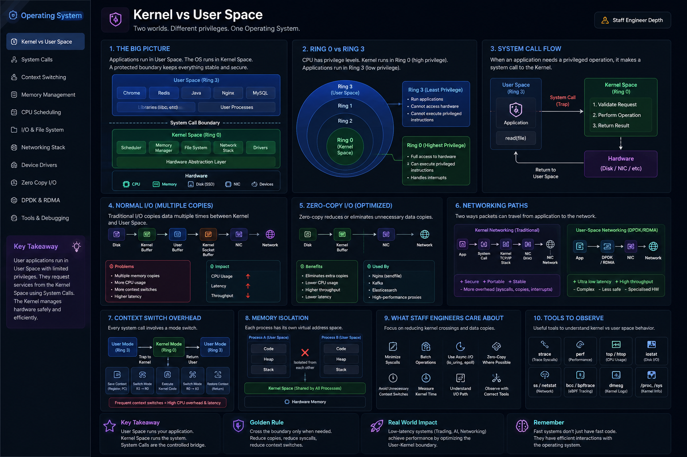

Two Worlds • Ring 0 / Ring 3 • System Calls • Zero-Copy • DPDK
The Big Picture
Every OS divides execution into two worlds. Without this separation, one buggy app could crash the entire machine, corrupt another process's memory, or let malware read passwords from RAM.
Applications request kernel services. The kernel decides whether to allow them. Think: kernel = CEO of the OS. Every app must ask before using company resources.
Why This Separation Exists
Without it
With it
User Space vs Kernel Space
| Property | User Space | Kernel Space |
|---|---|---|
| Ring | Ring 3 | Ring 0 |
| Privilege | Restricted | Full |
| Hardware access | No (via syscall) | Direct |
| Memory isolation | Per-process | Shared |
| If it crashes | Only that process | Whole OS |
| Examples | Java, Redis, Nginx | Scheduler, TCP/IP |
Ring 0 vs Ring 3 — CPU Hardware Enforcement
This is enforced in hardware, not software. The CPU physically prevents Ring 3 code from running privileged instructions. No OS policy can bypass it.
Why does Ring 1 and Ring 2 exist?
Historically reserved for device drivers and hypervisors. Modern x86 OSes (Linux, Windows) only use Ring 0 and Ring 3 in practice. Hypervisors use Ring -1 (VMX root mode).
System Calls — The Official Bridge
Applications cannot touch hardware, so how does a Java app read a file? How does Redis send a packet? The answer is a System Call — the only safe entry point into the kernel.
Common System Calls
| Syscall | What It Does |
|---|---|
read() / write() | File / socket I/O |
send() / recv() | Network send / receive |
open() / close() | Open / close file descriptors |
mmap() | Map memory / files |
fork() / exec() | Create / replace processes |
epoll_wait() | Async I/O event monitoring |
ioctl() | Device control |
System Call Flow
Why System Calls Are Expensive
A normal function call stays in User Space. A syscall triggers a mode switch:
Millions of unnecessary mode switches = significant CPU overhead and latency. This is why batching I/O and using async APIs matters.
Why Staff Engineers Care
Junior Engineer
"The application is slow."
Staff Engineer asks
Reducing kernel crossings often improves performance more than optimizing business logic.
Normal I/O vs Zero-Copy I/O
Traditional I/O — Multiple Copies
Impact: CPU up, latency up, throughput down
Zero-Copy — Direct Transfer
Benefits: Lower CPU, higher throughput, lower latency
Used by: Nginx (sendfile()), Kafka, high-perf proxies, io_uring
Kernel Networking vs User-Space Networking (DPDK / RDMA)
Kernel Networking (Traditional)
+ Secure + Portable + Stable + Multi-tenant
- System calls, context switches, memory copies, interrupt overhead
User-Space Networking (DPDK / RDMA)
+ Ultra-low latency + Millions of pkt/sec + No syscalls, no interrupts
- Complex, less safe, dedicated HW required
Used In
High-Frequency Trading • AI Clusters • Telecom • Packet Processing • Storage Fabric
How Everything Connects
Every file read, network request, process creation, or memory allocation crosses this boundary through a system call.
The Universal Request Path
Observability Tools
| Tool | What It Shows |
|---|---|
strace | Trace all system calls |
perf | CPU usage, kernel time |
top / htop | User vs system CPU % |
bcc / bpftrace | eBPF kernel tracing |
iostat | Disk I/O & wait time |
ss / netstat | Network connections |
Staff Engineer Mental Model — Questions to Always Ask
Can this kernel crossing be avoided?
Can multiple I/O ops be batched?
Can data avoid unnecessary copies?
Can the networking path be simplified?
Can async I/O reduce blocking? (io_uring)
Is zero-copy applicable here?
How many syscalls happen per request?
What % of CPU time is in kernel mode?
The best-performing systems are not just those with fast algorithms — they are those that minimize expensive interactions between User Space, the Kernel, and hardware.
Interview Cheat Sheet
Principal Engineer Takeaway
User Space — application logic runs in safe, isolated processes
Kernel Space — manages CPU, memory, FS, networking, devices
System Calls — the only sanctioned bridge, and they cost CPU
Zero-Copy / DPDK — optimize or bypass to minimize boundary cost
Understanding when the User–Kernel boundary is crossed, why it costs CPU cycles, and how technologies like zero-copy, io_uring, DPDK, and eBPF reduce those interactions — that is what distinguishes a Staff Engineer from someone who only knows application-level programming.
